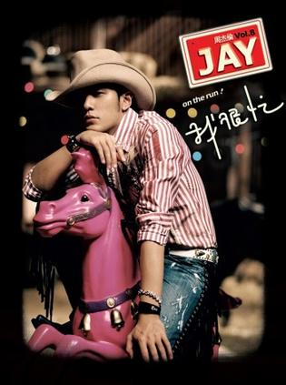
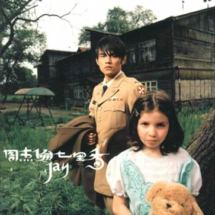

周杰伦专辑
- 2000年 首张专辑 Jay
- 2001年 范特西
- 2002年 八度空间
- 2003年 叶惠美
- 2004年 七里香
- 2005年 十一月的萧邦
- 2006年 依然范特西
- 2007年 我很忙
- 2008年 魔杰座
- 2010年 跨时代
- 2011年 惊叹号
- 2012年 十二新作
- 2014年 哎哟，不错哦
- 2016年 周杰伦床边的故事


当年单纯的我，约了一个叫夏凉的女生，去看周杰伦的电影，Secret。看电影成了我和她永久的秘密。
她喜欢插画，可以整天画笔不离手，画小动物。她和我一样，喜欢到处跑，取景，和流浪汉聊天。
高中的爱情就像电影里面的那样，单纯，美好，甜蜜和有点醋。
但是最终的结局，也像电影里面那样，悄无声息地流逝在在爱情史中里。你也有一段高中的爱情吗？有的话可以发给我邮箱哦。
每个喜欢车的男生，都希望拥有一辆丰田的AE86。我也不知道为什么，喜欢就是喜欢。
我最崇拜的是拓海那淡定的表情，他无论是输赢比赛，操作漂移，那表情基本上都是很淡定的。赢了，觉得正常。输了，引擎的问题而已。我认为男人就该这样，一场仗，赢了，很正常，输了，纠正错误，继续准备下一场，
他有不淡定的时候，就是看到他的女朋友坐在其他男人的车上。我不知道他女朋友爱不爱拓海，但我觉得只有赛车才能慢慢抚平拓海的心。
'你说你有点难追，想让我放弃。'告白气球的MV是在法国巴黎拍的，一对小情侣和一对基友的组合，感觉都挺浪漫的。MV里面的女生很漂亮哦，好像混血哦，她还有点像我一个女同学呢。第一次知道这首歌是看到周二珂的同名MV先的，超喜欢这个女生，她太可爱了。
“多少人，都在为生命的勇敢走下去。”想到自己的条件优越，再看到那么多人还在为生活而奋斗，我的雄心马上荣荣大火地燃烧了起来。稻香，令人奋斗的香！
小朋友，要听妈妈的话。这首MV感动了多少中华儿女的心。听妈妈的话，别让她受伤，快快长大保护她，也可以保护自己的宝贝。
一身戎装，呼啸沧桑。菊花残，满地伤。
满城尽带黄金甲的主题曲，MV里的布景像皇宫的奢华。地面是水面，飘着黄菊花，（这句好像有点问题？）不是木地板哦。感觉这个皇宫的悲伤都是奢华且贵重的。贵重的忧桑。